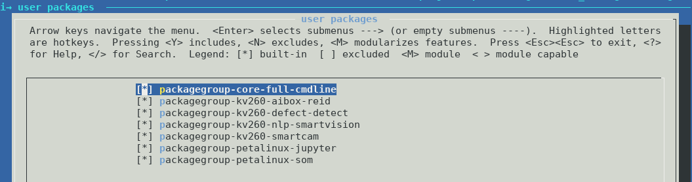

AA1: Kria™ KV260 Vision AI Starter Kit Tutorial |
Building Petalinux |
Introduction¶
This tutorial walks through the typical steps of creating and customizing a bootable Linux image for the K26 SOM and the KV260 Vision AI Starter Kit. The Linux starter image is headless without a Desktop environment. It comes pre-installed with a minimal set of command line utilites and the jupyter lab IDE which you can connect to from a web browser. Additional software packages and reference design applications can be downloaded and installed from a package feed.
In the follwing sections, you will:
Build the BSP with the default starter rootfs configuration.
Add the Xilinx application packagegroups into the project and configure it for the KV260 AI starter kit.
Learn how to add your own Vivado or Vitis generated bitstream/xclbin firmware components.
Prerequisites¶
PetaLinux 2020.2.2 tools installation
Petalinux SOM StarterKit BSP: xilinx-k26-starterkit-2020.2.2-final.bsp
Download the SOM Starter Kit BSP from the Petalinux Download page
Create the Project¶
Run the following command to create a new Petalinux project from the provided K26 SOM bsp file:
$ petalinux-create -t project -s xilinx-k26-starterkit-2020.2.2-final.bsp
$ cd xilinx-k26-starterkit-2020.2.2
Build the Image¶
Run the below commands to build and package the wic image:
$ petalinux-build
$ petalinux-package --wic --bootfiles "ramdisk.cpio.gz.u-boot boot.scr Image system.dtb"
The generated image file will be located at
images/linux/petalinux-sdimage.wic.
Tip: The generated wic file assumes a fixed partition size. The total file size is 4.1GB but the actual usage on the ext4 partition is much lower. The file size can be significantly lower by compressing the file e.g. using gzip:
$ gzip images/linux/petalinux-sdimage.wic
This generates a new output file named
images/linux/petalinux-sdimage.wic.gz with a file size of 265M.
Flash the image on an SD card using Balena Etcher. This image is functionally equivalent to the prebuilt wic image inside the bsp.
Build the SDK¶
A cross-compilation SDK is useful for application development on a host machine for a specific target architecture e.g. X86 host and ARM 64-bit target. Run the below command to generate a cross-compilation that can be used outside the PetaLinux:
$ petalinux-build -s
The resulting self-extracting shell script installer file is located at
images/linux/sdk.sh.
The SDK installer script can be copied to the application developer’s host machine and installed by simply running the script. Follow the prompts on the screen.
$ images/linux/sdk.sh
PetaLinux SDK installer version 2020.2.2_SOM
============================================
Enter target directory for SDK (default: /opt/petalinux/2020.2.2_SOM): ./images/linux/sdk
You are about to install the SDK to "/opt/petalinux/xilinx-k26-starterkit-2020.2.2/images/linux/sdk". Proceed [Y/n]? Y
Once the SDK is installed, source the file
images/linux/sdk/environment-setup-aarch64-xilinx-linux
to set up the cross-development environment.
Enable Xilinx Application Packages¶
The stock Petalinux BSP is configured for the K26 SOM but it is carrier card and
starter kit agnostic. To include KV260 starter kit specific packages on the
rootfs at build time, the BOARD_VARIANT variable needs to be set in the
config. Set the variable with the below command:
echo 'BOARD_VARIANT = "kv"' >> project-spec/meta-user/conf/petalinuxbsp.conf
Verify that BOARD and BOARD_VARIANT are now set to the following values in
the file petalinuxbsp.conf.
BOARD = "k26"
BOARD_VARIANT = "kv"
Both variables combined configure the bsp for the KV260 AI starter kit based on
the K26 SOM. It is now possible to enable packages with a package architecture
set to k26_kv.
Next, add the application packagegroups into the user rootfs config file such that rootfs menuconfig gets populated with those entries.
echo 'CONFIG_packagegroup-kv260-smartcam' >> project-spec/meta-user/conf/user-rootfsconfig
echo 'CONFIG_packagegroup-kv260-aibox-reid' >> project-spec/meta-user/conf/user-rootfsconfig
echo 'CONFIG_packagegroup-kv260-defect-detect' >> project-spec/meta-user/conf/user-rootfsconfig
Now run the petalinux rootfs config
$ petalinux-config -c rootfs
and select user packages ---> from the menu, then toggle on the newly added
application packagegroups by typing y next to those entries. The final
selection should look like this:

Then save and exit the configuration.
Continue with the build and image packaging instructions from above to build a new image.
Add New FPGA Firmware¶
Create firmware recipe for custom hardware¶
After you have evaluated the Xilinx provided applications, you may want to deploy your own custom hardware design. Petalinux provides a helper command to create a new firmware recipe.
fpgamanger_custom bbclass¶
The fpgamanager_custom bitbake class is a helper class to generate a set of
FPGA firmware binaries. The following hardware design hand-off artifacts are
required:
PL bitstream - applies to Vivado or Vitis designs
Device tree overlay source file - the user needs to create this file based on on the PL hardware design
Xclbin file - only applies to Vitis designs
Run the following command to generate a new firmware recipe:
$ petalinux-create -t apps --template fpgamanager -n user-firmware --enable --srcuri "user.bit user.dtsi user.xclbin"
The generated recipe will be located at
project-spec/meta-user/recipes-apps/user-firmware/user-firmware.bb with the
following contents:
#
# This file is the user-firmware recipe.
#
SUMMARY = "Simple user-firmware to use fpgamanager class"
SECTION = "PETALINUX/apps"
LICENSE = "MIT"
LIC_FILES_CHKSUM = "file://${COMMON_LICENSE_DIR}/MIT;md5=0835ade698e0bcf8506ecda2f7b4f302"
inherit fpgamanager_custom
FPGA_MNGR_RECONFIG_ENABLE = "1"
SRC_URI = "file://user.bit \
file://user.dtsi \
file://user.xclbin \
"
S = "${WORKDIR}"
Important: For correct operation in the context of libdfx and dfx-mgrd, the
user needs to add the fpga-config-from-dmabuf dt property into
fragment@0 to be applied to the fpga_full target. See here
for an example snippet:
fragment@0 {
target = <&fpga_full>;
overlay0: __overlay__ {
#address-cells = <2>;
#size-cells = <2>;
firmware-name = "kv260-aibox-reid.bit.bin";
fpga-config-from-dmabuf;
resets = <&zynqmp_reset 116>, <&zynqmp_reset 117>, <&zynqmp_reset 118>, <&zynqmp_reset 119>;
};
};
The recipe contains the minimum required elements but can be further customized by the user for their needs.
Please refer to https://github.com/Xilinx/kv260-firmware for example dtsi files
based on the fpgamanager_custom class used in the Xilinx accelerated
applications.
fpgamanger_dtg bbclass¶
Alternatively, you can use the fpgamanager_dtg bitbake class which uses the
Xilinx device tree genrator (dtg) to generate a device tree overlay from a
Vivado or Vitis-generated XSA file. The following hardware design hand-off
artifacts are required:
XSA file (must include bitstream) - applies to Vivado or Vitis designs
Device tree source file - the user can optionally add a device tree source file that will be appended to the dtg-generated device tree file
Xclbin file - only applies to Vitis designs
Run the following command to generate a new firmware recipe:
$ petalinux-create -t apps --template fpgamanager -n user-firmware --enable --srcuri "user.xsa user.dtsi user.xclbin"
The generated recipe will be located at
project-spec/meta-user/recipes-apps/user-firmware/user-firmware.bb
In the recipe, change the following line from inherit fpgamanager_custom
to inherit fpgamanager_dtg as shown in the below example.
#
# This file is the user-firmware recipe.
#
SUMMARY = "Simple user-firmware to use fpgamanager class"
SECTION = "PETALINUX/apps"
LICENSE = "MIT"
LIC_FILES_CHKSUM = "file://${COMMON_LICENSE_DIR}/MIT;md5=0835ade698e0bcf8506ecda2f7b4f302"
inherit fpgamanager_dtg
FPGA_MNGR_RECONFIG_ENABLE = "1"
SRC_URI = "file://user.xsa \
file://user.dtsi \
file://user.xclbin \
"
S = "${WORKDIR}"
The recipe contains the minimum required elements but can be further customized by the user for their needs.
Important: For correct operation in the context of libdfx and dfx-mgrd, the
user needs to append the fpga-config-from-dmabuf dt property
to the overlay0 node in a cutom user.dtsi file. See here for
an example user.dtsi snippet:
&overlay0 {
fpga-config-from-dmabuf;
};
Firmware Installation Directory¶
Regardless of whether the fpgamanger_custom or fpgamanger_dtg bbclass is
used, the resulting output products are installed into the
/lib/firmware/xilinx/user-firmware directory on the target rootfs. The output
products are:
Bitstream in bin format - this means the bitstream header is stripped
Device tree overlay binary (dtbo) compiled from the dtsi file(s)
Xclbin - this file is unchanged
At run-time, the FPGA firmware can be loaded using the xmutil loadapp utility
which is explained in more detail in the getting started guide.
Next Step¶
Go back to the KV260 SOM designs start page
References¶
Petalinux user guide UG1144
License¶
Licensed under the Apache License, Version 2.0 (the “License”); you may not use this file except in compliance with the License.
You may obtain a copy of the License at http://www.apache.org/licenses/LICENSE-2.0
Unless required by applicable law or agreed to in writing, software distributed under the License is distributed on an “AS IS” BASIS, WITHOUT WARRANTIES OR CONDITIONS OF ANY KIND, either express or implied. See the License for the specific language governing permissions and limitations under the License.
Copyright© 2021 Xilinx